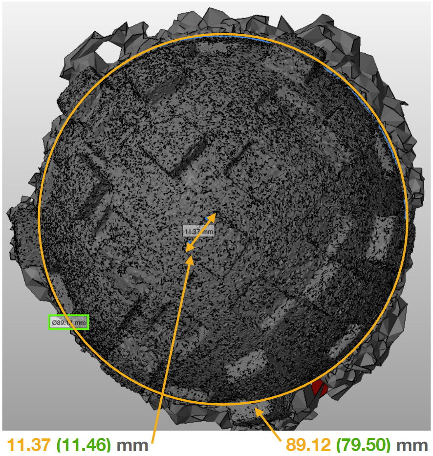

Photogrammetry
Photogrammetry is the process of collecting pictures of an object and converting them into a 3D model. One can walk around an object and get a rough estimate of how big it is, using this same concept, the software can stitch together multiple images into one 3D model. Photogrammetry has its advantages and disadvantages compared to conventional 3D modeling techniques such as LiDAR. LiDAR is only good for small to medium-sized objects due to the range of the laser. However, photogrammetry only requires pictures, so creating a 3D model can be possible for anything as small as microorganisms to extremely large areas such as ruins of an ancient temple. The reason why we are testing 3D reproducibility at high accuracy is to ensure that the helmets that are being manufactured are consistent with the CAD models. This includes both 3D printed parts in the lab and with unknown companies that produce these final products in different materials. Additionally, deformation occurs when a person wears the helmet as the material can stretch and cause permanent deformation in the future. These slight discrepancies in manufacturing and wear can cause the algorithm to be inaccurate and represent an unrealistic version of the brain inside the head. It is incredibly important to get the right distances from the sensors and the plane that is created by the x, y, and z sensors to calibrate the algorithm consistently.
1. Proposed Plan
I will first test different types of apps and software to get a direct comparison of the 3D models they produce. Then I will move forward to improving my pictures and test pieces that yield the most accurate and detailed models. First, by using a paid app called Trino, we can use this photogrammetry technique right on the phone. Directing the user to walk around the object, it displays an area in AR where the pictures must be taken. Then a software called Meshroom was then used to gather more detail and accuracy. It is a free open-source software that anyone can use. Though it does require higher computing processors and time, it resulted in one of the best results. However, using another software called Reality Capture, it enabled the user to use features such as auto scaling and it resulted in the best result with the fastest processing time.
2. Initial Methodology
The object was placed on the wood slab with the markers. For the app, the pictures were taken and processed within the iPad application. For the computer software, you must walk 360 degrees around the object, taking 100-150 pictures in all angles and orientations. The pictures are then imported to Meshroom to be processed.
3. Results
Doing this repeatedly resulted in the same factors that affected LiDAR. Including more surface deformations to create contrasts had a major impact when performing photogrammetry. Since the software is completely reliant on images, any extrusions or indentations will enable the software to stitch a better 3D model.
3.1 Trino
Taking the data developed by the app, the models were imported to Netfabb to measure distances. Netfabb reduced the number of triangles imported, allowing for faster loading times and a speeder interface. The Trino app requires around 50 images and the photos were processed within 10 minutes of the upload. The diameter reading was disappointing as it still had a 15.90% error. The extrusion readings were much better with an error of 5.31%. This lower reading could have been because I used the calibration distance to be on of these features. Giving these details around the dome a higher accuracy reading than if I had used the diameter to scale the model. Any measurements displayed in green are taken by hand by a caliper and measurements displayed in orange are measured on a computer. The 3D models can be controlled with the mouse and zoomed in with the scroll wheel.
3.2 Meshroom
Proceeding to use a software helped the accuracy improve. Uploading around 100 images to the software, it took around two hours to process. However, the models came out to be more detailed than what the app could produce. The diameter error was still in the range of 12.89%, which is still inaccurate for our standards. The extrusion error was less than a percentage, coming around 0.79%. Again, this could have been due to the fact that I use these smaller details to scale the entire model to the appropriate size. There are no limitations on how many images you can upload to the computer software, hence, having more images will increase accuracy. This, however, will increase the processing time considerably. 100 images took around 2 hours and 300 images took around 3.5 hours.
4. Issues Related To Photogrammetry
The 3D model that was outputted by the software was accurate for our needs. The downsides of photogrammetry are as follows:
- There is no scaling factor associated with the model. The software has no idea how to scale the object to real dimensions because it is not given that data and there is no place to input it.
- You cannot stitch the backside of the object as rendering the backside will require the movement of the object. This will change the orientation and background, which the softwarre uses to find appropriate distances from feautre to feature. This makes it impossible for the software to stitch the entire object in one render. One method is to render two sides separately and then combine them on a separate application later on.
- The lighting is crucial and any harsh reflection or shadow will make the software crash.
5. Changing Methodology
Taking it one step further to resolve problems 2 and 3, a stage was created. This stage is composed of black material that is absorbent to any light source. This black flock material absorbs 99% of light at certain angles, making it impossible for a camera to pick up. Darker material might help seperate the object from the background, however, it also makes dust particles more visible which can make the photogrammetry software crash. It is important to keep any particles away from the black material. The proposed plan was to take pictures of the object on a black stand and background so that the software is only able to replicate the lit areas. All the lights in the room were turned off and this eliminated any additional light reflection from surfaces around the test piece. This gave the software the illusion that the object was floating in space. The model could be recreated on all sides and this helped the accuracy improve drastically.
polarization was also used. Cross polarization is a method in which linear polarized light is filtered by a circular polarizer. To create this, I made a frame with a square hole in order to fit a DSLR or iPhone camera in the middle. The design consisted of a linear polarizer in front of led strips that were soldered together in a loop. The arms of the frame are attached to tosional hinges in order to hold the arms stationary at a desired angle. The design goal was to create something with high flexability to accomodate any surfaces that might need to get scanned in the future. Using this light source alongside a circular polarizer on the camera lense, the surface highlights and shadows were completely removed. Cross-polarizing the light yielded the best and most accurate images that I could have acquired. Since the light removed any shadows, I could pause the photo imaging process and flip the object, then resume the same process as before.
6. New Results
6.1 Cross Polarized Meshroom
The models that were reconstructed from the images taken from the new setup were incredibly accurate. The diameter reading had an error of 1.71% which equates to a 1.36 mm difference. These were by far the best results that were acquired from the test. The distances between extruded parts were 1.45% which is a 0.16 mm difference. The second figure below shows a software error that was introduced due to the dust particles on the stage. Though the model is represented poorly, the distances themselves are accurate. Measuring the diameter, the error was only 0.20% which is a 0.16 mm difference and the extruded parts had a 3.42% error, only a 0.40 mm difference. This result could be replicated for any object, not just the test piece. Since cross polarization eliminates reflections, black materials cannot be scanned using this method. If we put a helmet on top of this stand and take around 250 images, we can reliably say that the distances measured in the software will be accurate for our needs.
6.2 Reality Capture
We can replicate sub-millimeter accuracy in a lab, but what about in the field and in the real world where you might not have access to these materials? This is where a more advanced software is utilized. Reality Capture is a pay-by-model software where the settings are more customizable to the user. For example, up to this point, I have been using some known distance or size of the object in order to scale the entire piece. However, using this software, I can set the distances automatically, which allows for even greater accuracy. Moving on from the test piece, I wanted to try the helmet on a fake model. The model was set up on the plane wood stage with infrared markers. Once around 200 images were taken with a regular iPhone, the images were uploaded to the computer. Though the preprocessing settings took longer than Meshroom, the results were better. Measuring multiple distances and features on the helmet itself, the results are surprising. The sensor housing had an error of 1.57% which is a difference of 0.53 mm. The strap size error was around 2.62% which is a difference of 0.64 mm. Lastly, the frame segment had the lowest error of 0.78% which is only 0.29 mm!
7. Conclusion
We were able to acquire the submillimeter accuracy in the lab and even close to sub-half millimeter accuracy without any special equipment. The applications of these finds are endless as many have created 3D models of microorganisms or entire houses using this photogrammetry technique. What we proved here is that photogrammetry can match, if not do better, than advanced LiDAR systems that cost upwards of 10s of thousands of dollars. We were able to get an accuracy of <1.00 mm and to the point where the thickness of the paper could be differentiated from the model. Plus, the sizing requirements of LiDAR do not limit modern photogrammetry techniques. Photogrammetry can allow anyone to create 3D models for free. With a better setup and software, these models can get even more detailed and accurate.